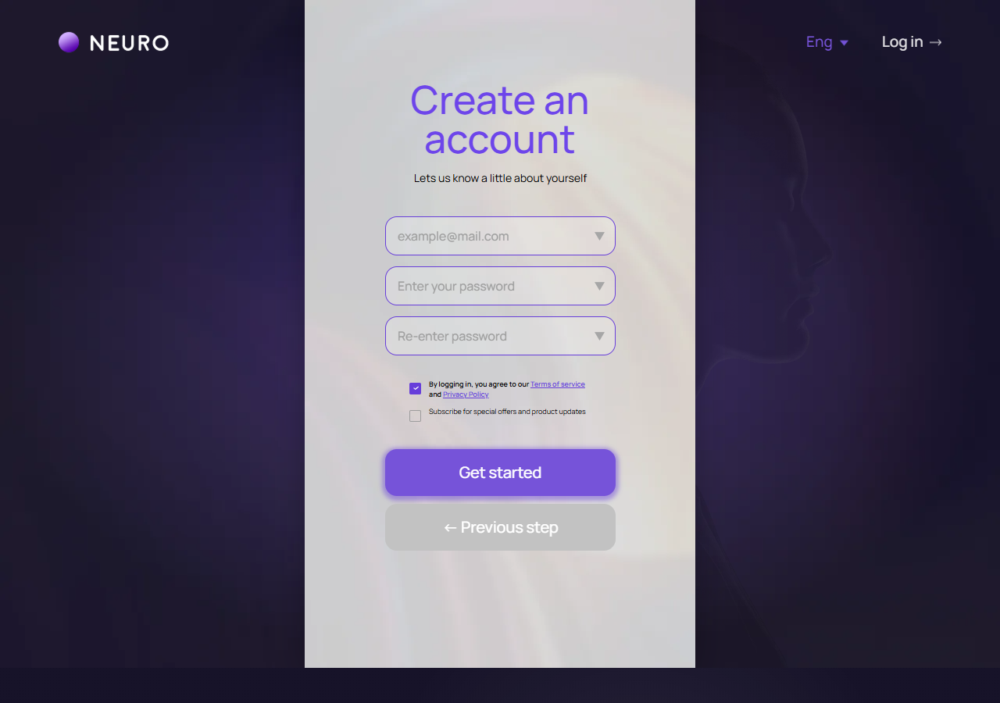
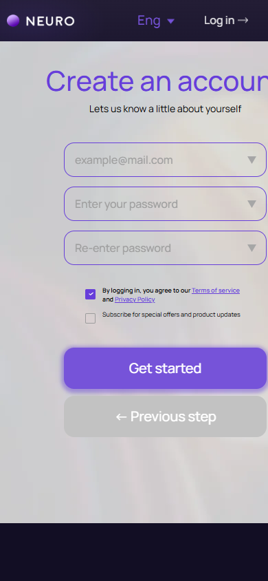

Регистрация: учетные данные
signup-step-2.html
Создать клиентский аккаунт, не эксперта.
| Когда открывается | Первый шаг регистрации |
|---|---|
| Данные | Email; пароль; подтверждение; данные первого шага; версия условий. |
| Сценарий | Проверить формат/совпадение/политику пароля → создать один аккаунт → состояние подтверждения/успеха. |
| Переходы | Аккаунт создан |
Запись согласий и необходимость email confirmation должны быть связаны с фактическим процессом регистрации.
Общая и предметная логика. Снимки и подписи элементов — исходная редакция макета; поздние уточнения ТЗ имеют приоритет в своей области. Это не проверка текущего сайта.
Состояние 1280 · 1280 × 900


Элементы и ожидаемые действия
| Элемент | Название в макете | Действие | Ожидаемый результат |
|---|---|---|---|
| E001 Скрыт в этом состоянии | na-auth-burger | Декоративный элемент шапки auth в исходнике, помеченный как неактивный. | Не выдавать его за работающий вход/сохранение. Если меню/тема нужны при интеграции, связать с общей шапкой без изменения композиции. |
| E002 Виден | Home | Открыть адрес из исходника: home.html. | Сохранить авторизацию и переданный контекст. Backend-only маршрут связывает Игорь; открытие не выполняет денежное действие. |
| E003 Виден | Log in | Открыть адрес из исходника: login.html. | Сохранить авторизацию и переданный контекст. Backend-only маршрут связывает Игорь; открытие не выполняет денежное действие. |
| E004 Скрыт в этом состоянии | Декоративный элемент шапки auth в исходнике, помеченный как неактивный. | Не выдавать его за работающий вход/сохранение. Если меню/тема нужны при интеграции, связать с общей шапкой без изменения композиции. | |
| E005 Виден | Your email | Ввести email; проверить формат, нормализацию и назначение адреса. | Неверный формат остается в форме. Подтверждение принадлежности отдельно от успешной доставки письма. |
| E006 Виден | Your password | Ввести пароль по действующей политике; confirmation должен совпасть. | Ошибка не раскрывает пароль; ввод не попадает в журналы/URL. Политика задается backend. |
| E007 Виден | Confirm your password | Ввести пароль по действующей политике; confirmation должен совпасть. | Ошибка не раскрывает пароль; ввод не попадает в журналы/URL. Политика задается backend. |
| E008 Виден | terms_consent | Изменить явно названный выбор формы. | Само изменение черновика не создает оплату или сохраненный объект; последующее подтверждение следует сценарию экрана. |
| E009 Виден | Terms of service | Открыть адрес из исходника: index.html#integration-routes. | Сохранить авторизацию и переданный контекст. Backend-only маршрут связывает Игорь; открытие не выполняет денежное действие. |
| E010 Виден | Privacy Policy | Открыть адрес из исходника: privacy-policy.html. | Сохранить авторизацию и переданный контекст. Backend-only маршрут связывает Игорь; открытие не выполняет денежное действие. |
| E011 Виден | marketing_consent | Изменить явно названный выбор формы. | Само изменение черновика не создает оплату или сохраненный объект; последующее подтверждение следует сценарию экрана. |
| E012 Виден | Get started | Проверить email/пароли и зарегистрировать клиента один раз. | Подтвержденный результат → account-created; ошибки и повтор не создают второй аккаунт. |
| E013 Виден | ← Previous step | Показать предыдущий/следующий элемент соответствующей карусели. | Меняется только текущий элемент/позиция. Эксперт не считается выбранным автоматически. |
| E014 Скрыт в этом состоянии | auth-form-status | Информационный блок/область фокуса, не самостоятельная команда. | Показывать актуальные данные соответствующего сценария; фокус или чтение не выполняют мутацию. |
Состояние 390 · 390 × 844


Элементы и ожидаемые действия
| Элемент | Название в макете | Действие | Ожидаемый результат |
|---|---|---|---|
| E001 Скрыт в этом состоянии | na-auth-burger | Декоративный элемент шапки auth в исходнике, помеченный как неактивный. | Не выдавать его за работающий вход/сохранение. Если меню/тема нужны при интеграции, связать с общей шапкой без изменения композиции. |
| E002 Виден | Home | Открыть адрес из исходника: home.html. | Сохранить авторизацию и переданный контекст. Backend-only маршрут связывает Игорь; открытие не выполняет денежное действие. |
| E003 Виден | Log in | Открыть адрес из исходника: login.html. | Сохранить авторизацию и переданный контекст. Backend-only маршрут связывает Игорь; открытие не выполняет денежное действие. |
| E004 Скрыт в этом состоянии | Декоративный элемент шапки auth в исходнике, помеченный как неактивный. | Не выдавать его за работающий вход/сохранение. Если меню/тема нужны при интеграции, связать с общей шапкой без изменения композиции. | |
| E005 Виден | Your email | Ввести email; проверить формат, нормализацию и назначение адреса. | Неверный формат остается в форме. Подтверждение принадлежности отдельно от успешной доставки письма. |
| E006 Виден | Your password | Ввести пароль по действующей политике; confirmation должен совпасть. | Ошибка не раскрывает пароль; ввод не попадает в журналы/URL. Политика задается backend. |
| E007 Виден | Confirm your password | Ввести пароль по действующей политике; confirmation должен совпасть. | Ошибка не раскрывает пароль; ввод не попадает в журналы/URL. Политика задается backend. |
| E008 Виден | terms_consent | Изменить явно названный выбор формы. | Само изменение черновика не создает оплату или сохраненный объект; последующее подтверждение следует сценарию экрана. |
| E009 Виден | Terms of service | Открыть адрес из исходника: index.html#integration-routes. | Сохранить авторизацию и переданный контекст. Backend-only маршрут связывает Игорь; открытие не выполняет денежное действие. |
| E010 Виден | Privacy Policy | Открыть адрес из исходника: privacy-policy.html. | Сохранить авторизацию и переданный контекст. Backend-only маршрут связывает Игорь; открытие не выполняет денежное действие. |
| E011 Виден | marketing_consent | Изменить явно названный выбор формы. | Само изменение черновика не создает оплату или сохраненный объект; последующее подтверждение следует сценарию экрана. |
| E012 Виден | Get started | Проверить email/пароли и зарегистрировать клиента один раз. | Подтвержденный результат → account-created; ошибки и повтор не создают второй аккаунт. |
| E013 Виден | ← Previous step | Показать предыдущий/следующий элемент соответствующей карусели. | Меняется только текущий элемент/позиция. Эксперт не считается выбранным автоматически. |
| E014 Скрыт в этом состоянии | auth-form-status | Информационный блок/область фокуса, не самостоятельная команда. | Показывать актуальные данные соответствующего сценария; фокус или чтение не выполняют мутацию. |